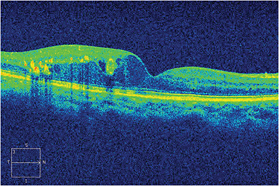

Diabetes is a greedy disease. Not satisfied with causing vascular, heart, lower extremity and renal problems, it moves upwards, affecting the eyes and making every attempt to rob the afflicted person’s sight.
The disease can manifest itself in the eyes in various ways: glaucoma, cataracts, but most commonly in the form of diabetic retinopathy.
“It can affect almost every part of the eye including the cornea, lens, optic nerve and retina,” says Ronald C. Gentile, MD, professor of ophthalmology, chief, Ocular Trauma Service (Posterior Segment), surgeon director, The New York Eye and Ear Infirmary of Mount Sinai, New York, NY.

A color photo of diabetic macular edema.
COURTESY DR. MARC PEDEN
It’s a tall order for those who develop vision-retaining pharmacotherapies. Even with the US Food and Drug Administration’s recent approval of two new intravitreal, time-release steroid injectables, the diabetes-related formulary remains far from perfect, in terms of numbers, efficacy and duration.
In the eye, disease manifestations of diabetes are mainly related to microvascular changes. “Hyperglycemia causes damage and death of pericytes that line blood vessel walls, resulting in a weakened, permeable vasculature,” explains Shaun Ittiara, MD, vitreoretinal specialist, Retinal Vitreal Consultants, Chicago. “This can result in micro-aneurysms, cotton wool spots, hemorrhage and macular edema. [They] can significantly affect central vision.”
More severe damage can cause ischemia and neovascularization, resulting in rapid and irreversible blindness from neovascular glaucoma or tractional retinal detachments.
Although types 1 and 2 differ greatly in pathophysiology, the hyperglycemia and resulting complications are fairly similar, Dr. Ittiara continues. However, differences in the presence and severity of retinopathy at initial presentation are well known; compared to type 1 diabetics who rarely have diabetic retinopathy when diagnosed with diabetes, those with type 2 can present with vision-threatening retinopathy at diagnosis. Other factors that influence the severity of diabetic retinopathy besides disease duration include severity of hyperglycemia, elevated serum lipids and hypertension.
Generally speaking, the longer an individual has diabetes, the greater the chance he has of developing diabetic retinopathy. Screening should begin five years after a type 1 diagnosis; with type 2, at the time of diagnosis. Dr. Ittiara said some reports show that 20 years post-diagnosis, more than 90% of type 1 patients and more than 60% of those with type 2 will have some degree of retinopathy.
But patients can make choices. The Diabetes Control and Complications Trial1 confirmed the role of strict glycemic control to reduce these diabetic complications in patients with type 1. The United Kingdom Prospective Diabetes Study2 showed the same relationship in type 2 diabetics and emphasized how controlling hypertension mitigates morbidity. Smoking also can worsen complications related to diabetes.
Q&A: DME, from an endocrinologist’s perspective
Anne Peters, MD, director, University of Southern California (USC) Clinical Diabetes Program, and professor, Keck School of Medicine of USC, Beverly Hills, Calif.
Q: As an endocrinologist, what is your role in treating conditions that arise from diabetes?
Dr. Peters: Treating diabetes involves treating blood pressure, blood glucose and lipids. It is a progressive disease, so patients typically need more medications over time. The goal is to prevent complications by treating as aggressively as is appropriate and as safely as possible.
Endocrinologists don’t treat eye conditions per se, except indirectly through glycemic control — so my treatment protocols don’t differ because a patient has retinopathy. My target is to help patients reach an HbA1c that is as close to normal as is safely possible. I send all patients for an annual retinal exam. If patients have diabetic retinopathy, I refer them to a retinal specialist who recommends treatment.
Q: Please discuss some issues related to diabetes treatments.
Dr. Peters: If you look at all of the recent studies, we are doing better in terms of lowering A1cs and we’re reducing rates of diabetic retinopathy. But the problem is that more people are getting diabetes and there aren’t enough trained doctors to manage diabetes. In fact, there are only approximately 2,500 diabetes specialists in the country. This means that most patients with diabetes are treated in a primary care setting. This is appropriate, although individuals with type 1 and those with more complex type 2 need referral to an endocrinologist.
The most difficult part when dealing with diabetes is that it is persistent — it doesn’t go away — so patients need to be treated for years. It is also progressive so new medications often need to be added. Finally, lifestyle plays a huge role in diabetes care and it is always hard to change one’s habits.
Q: Which populations are affected the most? How can they be proactive in preventing and treating diabetes?
Dr. Peters: Latinos and African Americans have higher rates of diabetes and historically have done worse than Caucasians, in part due to limited access to health care. The most important thing for individuals to do is to seek health care early if they have risk factors for diabetes such as being overweight, have heart disease, or have a family member with diabetes. These individuals should get screened for diabetes. Type 2 can be prevented if treated early. If you can prevent diabetes, you can prevent eye disease.
— Karen Appold
Anti-vascular endothelial growth factor (VEGF) is a proven, effective treatment for diabetes — particularly macular edema. However, this only targets one end product of the disease process. The Diabetic Retinopathy Clinical Research (DRCR) network is an organization funded by the National Eye Institute. It sponsors various clinical trials to help elucidate best treatment protocols for diabetic eye disease, and has demonstrated the efficacy of anti-VEGF therapy in protocol I, reports Marc Peden, MD, ophthalmologist and retinal specialist, Retina Associates of Florida, Tampa. In this protocol, patients who received ranibizumab (Lucentis, Genentech, South San Francisco, CA) with either prompt or deferred laser had much better visual outcomes at years one and two compared to eyes receiving laser alone or laser with triamcinolone alone. Multiple double-masked randomized studies3-5 have consistently shown how effective this anti-VEGF treatment is for diabetic macular edema (DME).
Within the last three years, the FDA has approved ranibizumab and aflibercept (Eylea, Regeneron, Tarrytown, NY) for the treatment of DME. Bevacizumab (Avastin, Genentech) continues to be another valuable anti-VEGF therapy, commonly used off label.
Using Anti-VEGF in the clinic
Ronald C. Gentile, MD, professor of ophthalmology, chief, Ocular Trauma Service, surgeon director, The New York Eye and Ear Infirmary of Mount Sinai, New York City, and Dr. Marc Peden, ophthalmologist and retinal specialist, Retina Associates of Florida, Tampa, talk about using anti-VEGF treatments.
1. Do you prescribe anti-VEGF drugs? If so, how effective are they?
Dr. Gentile: Anti-VEGF agents are used to treat multiple manifestations of diabetic retinopathy, including diabetic macular edema, proliferative diabetic retinopathy, and neovascularization of the iris and/or angle that in some cases can complicate diabetic retinopathy. I use them routinely.
Dr. Peden: Anti-VEGF treatments have become the gold standard for treatment of diabetic macular edema. We use these medications as first-line therapy for most patients and augment with concomitant laser or intravitreal steroid therapy if they are not responding, or minimally responding, to anti-VEGF therapy. The RISE/RIDE study demonstrated that between 2 times to 3 times more patients were gaining three lines of vision after two years when treated with ranibizumab as opposed to laser.
2. What are their main side effects?
Dr. Gentile: Side effects can be related to the injection or to the medication. The most common side effects related to the injection procedure are usually not sight threatening and include a red eye or subconjunctival hemorrhage, corneal and conjunctival irritation, and nonretinal detachment- associated floaters. More serious complications are rare with one of the most serious being an infection. The chance of an infection is estimated at about 0.05% or 1 in 2000 injections. Physicians use an iodine-based solution just before the injection to decrease this complication. Systemically, intravitreal anti-VEGF agents can theoretically increase the risk of cerebrovascular accidents, stroke, and heart attacks. Physicians usually balance out the risks and benefits for each patient based on the patient’s risk factors.
Dr. Peden: All medications injected intravitreally carry inherent risks including bleeding, retinal detachment, damage to adjacent structures, and endophthalmitis. However, these risks are extremely small. The general safety profile for these medications is quite good considering the profound visual benefits they provide, but serious complications have been reported. When given systemically these medications have been known to increase the risk (besides those mentioned above) of hypertension, gastrointestinal bleeding and perforation, and renal disease. While invasive, one advantage of intravitreal administration is that only minimal concentrations of these drugs have the ability to make it into systemic circulation. Safety data for intraocular administration is extremely varied with some studies demonstrating increased risk of serious adverse events while others show no difference compared to placebo. Because these potential risks are so minimal, it would take an extremely large sample size to power a study to tease out the true significance of these reported events.
3. Are there any problems with drug interactions?
Dr. Gentile: Drug interactions are not a common concern. The dose used within the eye is small and the systemic effects are not known to be clinically relevant.
Dr. Peden: Agreed.
4. What treatment(s) were you prescribing prior to anti-VEGF?
Dr. Gentile: Systemic control, laser, and steroids were used prior to anti-VEGF agents and are still used depending on the clinical scenario.
Dr. Peden: Focal/grid macular laser was the first treatment modality shown to provide significant visual benefit in the ETDRS study. Intravitreal injection of steroids has also been utilized with success and continues to be used frequently as a second-line agent.
5. Why did you switch to prescribing anti-VEGF?
Dr. Gentile: I would say we use anti-VEGF agents for diabetic retinopathy and for some cases we have switched as the initial treatment based on the clinical findings. For some cases we have not switched. This has been a result of the clinical trials and our comfort level with using these agents.
Dr. Peden: During my fellowship in 2007, we began to utilize off-label bevacizumab for the treatment of diabetic macular edema often in conjunction with focal laser or intravitreal steroid. We began to see multiple case series and reports touting the benefits of this drug. At the time no FDA approved anti-VEGF agents for DME existed, yet ranibizumab studies were commencing with the RISE/RIDE studies and DRCR protocol I. In 2010, the one-year results of DRCR protocol I showed profound benefit of ranibizumab over triamcinolone and/or laser. It was around this time that anti-VEGF therapy was adopted as first-line therapy for DME.
6. Have you had any Medicare issues?
Dr. Gentile: I have not had any Medicare issues but know that some physicians have had issues with second-party payers.
Dr. Peden: Medicare covers all three anti-VEGF agents used for DME. Issues with reimbursement frequently arise when initially billing for new indications, but these are usually software issues that are rectified quickly. Problems with reimbursement are more commonly seen with other third-party private insurance. Administering FDA-approved medications causes practices to incur significant financial risks given that the drugs are purchased by the physician practice in advance of receiving payment from insurance companies. Insurance companies may deny or delay payment, resulting in potential practice cash flow issues. Reimbursement scales also differ among companies and even between physician contracts with the same insurance company. A few companies have attempted to pay less than Medicare rates, resulting in physicians losing substantial money on these drugs. These sorts of passive maneuvers have placed increased financial pressures on physicians to use less expensive, non-FDA-approved intraocular agents.
This year the FDA approved the dexamethasone intravitreal implant (Ozurdex, Allergan, Irvine, CA) for treatment of DME in pseudophakic patients or patients scheduled for cataract surgery. “While primarily used as an adjuvant to anti-VEGF therapy, it has been shown to effectively decrease macular edema and improve durability of the effect of anti-VEGF agents,” Dr. Peden says. “Other drug targets are being studied, but scant preliminary data is available. More likely advances will include mechanisms of administration including sustained release anti-VEGF through implants, refillable pumps or gene therapy.”
The FDA also recently approved Iluvien (fluocinolone acetonide intravitreal implant, Alimera, Alpharetta, Ga).
Despite these agents’ benefits, they can lack durability and need to be frequently re-administrated. Furthermore, “The method of administration through an intravitreal injection, while quite safe, is much more invasive than other potential delivery systems such as pills, drops or subcutaneous injections,” Dr. Peden says.
Besides, says Pravin U. Dugel, MD, managing partner, Retinal Consultants of Arizona, in Phoenix, and clinical professor, Department of Ophthalmology, Keck School of Medicine, University of Southern California, in Los Angeles, some patients with advanced or severe disease have an inflammatory component that anti-VEGF monotherapy might not address. Also, many DME patients have comorbid diseases, so it is a challenge for them to get monthly treatments. “The number of treatments need to be reduced by either combination therapies or a sustained delivery device,” he says.
A safety issue also exists. When you inject something into the eye, it enters into systemic circulation. Physiological VEGF is important for wound healing and allows for collateral vessel formation, protecting against end-organ damage, among other benefits. “So we have to be careful about which anti-VEGF we choose from a safety standpoint because we want one with the least amount of systemic exposure,” Dr. Dugel says.
Dr. Ittiara finds DRCR’s Protocol S clinical trial of particular interest. This is a phase 3, multicenter, randomized clinical trial comparing prompt panretinal photocoagulation (PRP) to ranibizumab with deferred PRP for proliferative diabetic retinopathy. PRP is a destructive standard of care for proliferative diabetic retinopathy that can result in constricted visual fields, nyctalopia, decreased contrast sensitivity and color perception. “If ranibizumab can delay or eliminate the need for PRP, it may compel us to change our approach to proliferative diabetic disease in order to preserve more visual function,” Dr. Ittiara says.
Another noteworthy trial is the DRCR Protocol T clinical trial. This is a multicenter, randomized clinical trial comparing the efficacy and safety of intravitreal aflibercept, ranibizumab and bevacizumab for center-involving DME. “The results of this trial could potentially help elucidate differences between these agents, impact practice patterns for DME, and highlight socioeconomic issues,” Dr. Ittiara says.
Dr. Gentile says the preliminary results are out and showed that after one year aflibercept-treated eyes had significantly better visual acuity improvements compared to eyes treated with other anti-VEGF agents. DRCR.net will publish the final results and recommendations. (The protocol can be found at http://drcrnet.jaeb.org/Studies.aspx?RecID=206)
Another study, Protocol U, is designed to determine whether patients who have not responded to multiple, regular injections of anti-VEGF agents will benefit from receiving a dexamethasone implant. (For further information, go to http://clinicaltrials.gov/show/NCT01945866)
Allegro Ophthalmics is testing its Luminate in a Phase 2 trial against the DME standard of care. Luminate is designed to bar new blood vessel formation and vascular leakage using its integrin peptide therapy. Patients will be randomized into five treatment groups. Three of the five will be Luminate dosages. The other will be a bevacizumab group, and the last a focal laser photocoagulation group. According to Allegro, the therapy has shown promise in stopping new blood vessel formation, reducing vascular leaks and restoring sight. A major goal is to cut the number of intravitreal injections. (For more information, go to http://www.allegroeye.com/technology/#sthash.LJygN6vm.dpuf
Diabetic macular edema, captured using light-intensive, 3-D ocular coherence tomography.
COURTESY DR. MARC PEDEN
Dr. Dugel says a new class of drugs is being developed called tie 2 activators. They stabilize blood vessels, making them less likely to bleed and leak. These drugs are administered through injections in subcutaneous tissue, which is a separate pathway than intravitreal anti-VEGF injections. The treatment tends to be effective for a long time. It can be used alone or in combination with anti-VEGF drugs. Aerpio is the trial’s sponsor.
“While we have wonderful agents to help combat the sequelae of diabetes in the eye, these modalities that we have available only serve to try and stabilize disease and in general do nothing to reverse damage,” Dr. Peden concludes. “The presence of retinopathy represents cumulative damage over several years and therefore it also takes several years of excellent glycemic control for disease to stabilize or begin to reverse in the back of the eye. Ultimately it’s sustained glycemic control which is the most important and effective treatment for this disease process.” OM
1. The Diabetes Control and Complications Trial Research Group. The effect of intensive treatment of diabetes on the development and progression of long-term complications in insulin-dependent diabetes mellitus. N Engl J Med. 1993;329:977-986.
2. King P, Peacock I, Donnelly R. The UK prospective diabetes study (UKPDS): clinical and therapeutic implications for type 2 diabetes. Br J Clin Pharmacol. Nov 1999;48:643-648.
3. Nguyen QD, Shah SM, Heier JS, et al. Primary end point (six months) results of the ranibizumab for edema of the mAcula in diabetes (READ-2) study. Ophthalmol. Nov 2009;116:2175-2181.e1. doi: 10.1016/j.ophtha.2009.04.023. Epub 2009 Aug 22.
4. Nguyen QD, Brown DM, Marcus DM, et al. Ranibizumab for diabetic macular edema: results from 2 phase III randomized trials: RISE and RIDE. Ophthalmol. Apr. 2012;119:789-801. doi: 10.1016/j.ophtha.2011.12.039. Epub 2012 Feb 11.
5. Korobelnik JF, Do DV, Schmidt-Erfurth U, et al. Intravitreal aflibercept for diabetic macular edema. Ophthalmol. Jul 8, 2014. pii: S0161-6420(14)00426-6. doi: 10.1016/j.ophtha.2014.05.006. [Epub ahead of print